Morphe
This section is not necessary for those who just want to make characters and play around, but exists for those who want to ingrain themselves deeply into it. This document will start with the broad strokes, condensing more on the city Vallamers call home the more you scroll down.
Morphe (pronounced Morf-ay) is the setting of Vallam, occupying Earth's position in a solar system otherwise identical to our own. It is geologically older and 2.5 times Earth's size, but its lower overall density and smaller relative iron-nickel core produce surface gravity within 2% of Earth's. Its weaker magnetic field still provides sufficient protection from solar radiation. Morphe's lower internal heat limits volcanic activity, while its greater surface area and extensive tectonic plate network distribute geological activity across more fault lines, some of which are exceptionally violent. Its vast oceans, powerful long-lived storms, and immense distances between continents have made maritime travel central to civilization.
Most of Morphe's landmass surrounds the Zodiac Ocean, a relatively calm central sea and the historical center of maritime trade.
- Nihil Oceans: Twin eastern and western oceans marked by catastrophic tectonic activity,
unpredictable swells, and magnetic anomalies that disrupt compasses. Circumnavigation remains exceptionally dangerous.
- Arctic Ocean: Also called the Northern Nihil or Northern Void, this frozen polar expanse is
filled with icebergs and extreme cold. No landmasses beyond those already charted are known to exist.
- Southern Ocean: Extending south beyond the inhabited equatorial continents, this largely
unmapped ocean is notorious for ships that never return. Permanent cyclone systems south of The Cradle reinforce the belief that these waters are cursed.
The global population of Morphe in 1926 is approximately 3.2 billion people.
The Day, The Year, and The Axis
A Morphean day lasts 25.4 Earth hours, divided into 24 hours of approximately 1.06 Earth hours each. A year lasts 371 days. Fairbourne and much of the Reach follow a calendar of twelve 30-day months, followed by an eleven-day intercalary period called the Long Week. Falling between years, the Long Week serves as both a major holiday and a civic reset, though local cultures may observe it differently.
Morphe's axial tilt is 26.1 degrees, slightly greater than Earth's 23.5, producing more pronounced seasonal variation outside the equatorial regions. Mid-latitude winters average roughly 2°C colder and summers 2°C warmer than their Earth equivalents. Morphe's vast oceans moderate coastal temperatures, reducing seasonal extremes across much of the world's inhabited land. Inland regions experience stronger temperature fluctuations, creating distinct regional climates and growing conditions.
The Moon
Morphe has one moon, simply called the Moon in Fairbourne. Other cultures have their own names for it. The older Astralist tradition called it the Second Eye, with the sun as the first, though the Reformist branch has largely abandoned this terminology. The Moon is 1.84 times the radius of Earth's Moon and orbits Morphe at approximately 707,000 km, completing an orbit every 29.5 days. The Moon produces tides approximately 20% stronger than Earth's, significantly affecting coastal infrastructure, harbour design, and navigation schedules. Vallam's dockyards and other coastal settlements account for these stronger tidal ranges as a routine part of maritime life.
Atmosphere and Climate
Morphe's atmosphere is compositionally near-identical to Earth's, the same oxygen-nitrogen mix, the same trace gases, the same greenhouse effect keeping the surface within habitable temperature ranges.
The same photosynthetic chemistry produces the same oxygen. The same respiration chemistry consumes it. The larger planet holds more atmosphere by total volume but at comparable surface pressure, because the surface area is also proportionally larger.
The greater ocean surface area, Morphe's seas cover a proportionally larger percentage of the planet's surface than Earth's, given that the four major continents, while larger than their Earth counterparts, do not scale at the same rate as the planet itself, means more evaporation, more moisture cycling through the atmosphere, and more energy available to storm systems. Morphe's weather is recognisably Earth-like in structure, fronts, pressure systems, trade winds, the jet streams that steer those systems across the mid-latitudes, but the storms that develop over the great ocean basins are larger and more energetic than their Earth equivalents. A Morphean hurricane isn't categorically different from an Earth hurricane. It is, on average, bigger, lasts longer, and carries more rainfall. The cyclone systems that make the Southern Ocean impassable and the Selkeff straits dangerous are partly a function of the normal mechanics of mid-latitude storm generation, and partly a function of Morphe's storms simply having more energy to sustain themselves before they dissipate.
Ocean circulation follows the same broad logic as Earth's. Morphe's rotation drives the same Coriolis deflection, the same great gyres in the ocean basins, and the same thermohaline conveyor belts driven by temperature and salinity gradients. The Zodiac Ocean, being relatively enclosed and in the equatorial-to-mid-latitude band, is calmer than the great surrounding oceans for the same reason the Mediterranean is calmer than the North Atlantic. The Nihil Oceans, being vast open basins directly exposed to the full energy of Morphe's storm systems, are not.
Nihil Oceans The Nihil Oceans cover Morphe's two most seismically active tectonic boundaries. Although Morphe's plate tectonics follow the same principles as Earth's, its greater surface area supports more plates and complex boundary interactions. Both ocean basins formed along ancient divergent boundaries that later became convergence zones, creating regions where subduction zones, submarine volcanic ranges, and active mid-ocean ridges coexist.
Frequent, powerful submarine earthquakes generate sudden wave systems with steep fronts and little warning. Unlike ordinary ocean swells, these waves travel rapidly and change direction unpredictably.
Their danger lies less in their size than in their erratic movement. Dense hydrothermal vent fields create unpredictable ocean conditions, including fog over warm upwellings, sudden cold currents where heated water sinks beneath colder layers, and thermal stratification that disrupts normal wave patterns.
Volcanic gases introduce trace compounds into the water column, complicating depth measurements made with weighted sounding lines. Repeated seismic events also reshape the seabed, rendering most charts unreliable within approximately five years.
The Nihil's hyperactive volcanic ridges produce vast deposits of rapidly cooled basalt. As the rock solidifies, it preserves the orientation of Morphe's magnetic field. Repeated magnetic reversals have left the seabed magnetized in conflicting directions, creating localized fields that deflect compass needles independently of true north. These anomaly zones shift as new volcanic material accumulates, meaning a magnetic chart that guided a navigator in 1901 may be dangerously misleading by 1926.
Gyroscopic compasses, recently introduced aboard Morphe's most advanced vessels, are unaffected by these anomalies. Their adoption has renewed interest in Nihil passage since approximately 1918, though they offer no protection against seismic or volcanic hazards. Nations that have established reliable routes across the Nihil keep them closely guarded.
Abyss Serpents Morphe's vast oceans and ancient, complex deep-sea ecosystems support marine fauna larger than anything known in Earth's oceans. Abyss Serpents, a collective term for enormous deep-sea predators, are real animals confirmed by naval encounters and partially studied by Morphe's zoological institutions. They are not supernatural, but their size makes them dangerous to small vessels and potentially capable of damaging larger ships under specific circumstances. They avoid the surface during daylight, making sightings rare and allowing them to remain the subject of sailor's tales among inland populations.
Abyss Serpents are most prevalent in the Nihil Oceans, where hydrothermal vent systems sustain deep-sea food chains capable of supporting such large predators, and the Southern Ocean below the cyclone belt, where limited maritime traffic has allowed populations to develop with little pressure from human hunting. They are less common in the deeper regions of the Zodiac Ocean, where proximity to established shipping lanes has produced the most documented encounters and successful hunts. Fairbourne's navy has recorded 14 confirmed encounters in the past century. The largest documented specimen was encountered by the HFS Constant in 1887 and estimated at approximately 27 metres long. Larger specimens have been reported, but the Dominion Zoological Institute considers these accounts unverified.
Abyss Serpents compound the Nihil Oceans' existing navigational hazards. Seismic activity, magnetic anomalies, and unpredictable swells already make passage dangerous; the possibility of encountering a predator capable of damaging a ship further discourages exploration. Together, these geological, navigational, and biological threats make the Nihil Oceans waters that even experienced sailors prefer to avoid.
The Continents
Morphe has four major landmasses: the Reach, Corda, Selkeff, and the Cradle. These are informal names; formal designations vary by nation and tradition, and the Fairbourne Dominion's cartographic standards are not universally accepted.
The Reach is the easternmost of the two great continents, a landmass comparable in total area to Africa, Europe, and Asia combined, dense with mountain ranges, interior plains, river systems, and climates ranging from equatorial to subarctic. The Reach is home to Morphe's oldest continuous civilizations, including its first organized states, recorded religions, and major wars. The Fairbourne Dominion occupies its northwestern peninsula, with Vallam on the northern coast. The fractious vassal states of Cerani and Răvin lie immediately south and southeast, along the warmer eastern seaboard.
Corda is the westernmost great continent, roughly mirroring the Reach in size across the Zodiac Ocean. It is where the Lys Monarchy's Renascia emerged, initially in Corda's northern reaches. By 1926, Renascia controls most of northern Corda, while the Deadlock, a contested frontier between Renascia's expansion and the remaining Fairbourne-aligned nations, runs along the continent's southern spine. Corda is generally warmer than the Reach, with longer growing seasons and enormous river deltas that historically supported agricultural wealth.
Many of the Zodiac Ocean's major merchant traditions also originated here.
The Cradle is a southern-central continent slightly larger than Australia. It is the birthplace of humanity and the oldest continuously inhabited region of Morphe. Both Astralism and the Eclipsiad trace their civilizational and religious origins to this landmass. Its northern coast borders the Zodiac Ocean, while its southern reaches approach the Southern Ocean's permanent cyclone belt, which prevents further navigation. By 1926, several Fairbourne vassal states formally divide the Cradle, though the Dominion's influence weakens considerably inland, where its authority is increasingly contested. The Cradle holds both religious and strategic importance. It contains the holy city at the heart of Astralism's most sacred sites and controls southern Zodiac sea lanes connecting the Reach and Corda.
Selkeff is a smaller northern landmass situated between Corda and the Reach, separated from both in part by cold archipelagos. Its climate is harsh, its geology highly active, and its interior remains only partially mapped as of 1926. Repeated colonization attempts have failed, and Selkeff's indigenous peoples maintain limited contact with the major powers through a combination of deliberate isolation and geographic barriers. Fairbourne maintains a naval presence in the Selkeff Straits to monitor Renascia's northern expansion as it approaches Selkeff's eastern shores. Much of Selkeff's interior remains unexplored, leaving its geography, inhabitants, and natural hazards poorly understood.
The Religions
The Eclipsiad

The Eclipsiad is Morphe's oldest major religion. Despite centuries of persecution and suppression by dominant religious and political institutions, it survives through scattered communities and underground sects. The Eclipsiad teaches that the Sun, known as the Radiance or Sol, is a living, consuming entity rather than an ordinary star. It sustains itself by drawing the vital energy of orbiting worlds through a process called the Tithe. Every life, civilization, and birth contributes to this consumption. In return, the Radiance produces the light and warmth necessary for life. Eclipsiad scripture traditionally presents this relationship as both parasitic and sustaining, likening the Radiance to a garden that continually tends, consumes, and regrows.
The Eclipsiad's sacred text, also called the Eclipsiad, has no single author, founding date, or editorial authority. During every lunar eclipse, practitioners gather beneath the open sky before a white flame and record whatever comes to them: visions, impressions, prophecies, or instructions from seemingly unseen sources. These writings are added to the living text without a unified system of interpretation.
New verses may overwrite older ones, contradictory prophecies are combined, and some original passages have been lost beneath successive revisions. Verses use the prefix E. followed by an ordinal number (e.g., E.1 or E.714), indicating their order of addition rather than their authority or importance. Consequently, no two regional versions are necessarily alike. One sect might interpret a passage as a literal account of the Radiance's feeding cycle, while another reads it as a metaphor for nonlinear time.
Older Eclipsiad sects, descended from the pre-Astralist religious traditions, practice ritual self-mutilation. This practice reflects the belief that the Radiance is perpetually revising itself through cycles of growth, consumption, and transformation without ever reaching completion. By permanently altering their bodies, practitioners participate in this process, affirming that they, too, remain unfinished. Centuries of persecution and the marginalization of these older orders have caused the practice to lose its original context in some communities. Some younger adherents inflict severe injuries, including amputating limbs, without fully understanding the theology behind the ritual.
They preserve the practice much as people repeat prayers whose original meanings they no longer understand. Surviving theologians of the older orders regard this loss of meaning as part of the same cycle of revision that defines the Radiance: practices persist beyond their original purpose, awaiting rediscovery.
The Eclipsiad has no formal clergy. Its practitioners include keepers of the text, readers of eclipses, and solitary wanderers from older sects who carry partial copies of the scripture across national borders, often at considerable personal risk. By 1926, the religion is practiced openly in a handful of small nations and underground across much of the rest of Morphe. Public perceptions range from scholarly curiosity to outright condemnation as a pagan faith.
Astralism

Astralism is Morphe's dominant religion in 1926, deeply embedded in its calendars, laws, architecture, naming conventions, culture, and political legitimacy. In most nations, living entirely outside its institutions presents administrative as well as spiritual difficulties. The Astralist calendar's year zero marks the birth of the Prophet Lyster, placing Morphe in the nineteenth century of Astralist reckoning.
Astralism teaches that the constellations are living godlike beings that have cultivated life on Morphe across countless cycles. Each constellation shapes life according to its own nature, competing and collaborating with the others for humanity's loyalty and vital expression. Each also governs its own tailored afterlife, receiving those who belong to it. The constellations are not considered inherently evil or selfish. They are ancient, powerful, and interested in the world they have created. However, their competing ambitions have made Morphe itself the battleground for their rivalries.
Lyster was the constellations' final deliberate attempt to create the ultimate human being, designed after millennia of studying the imperfections of their previous creations. He was born understanding his origins and spent his early years reconciling himself with his purpose before turning his attention to the world around him. His life is recorded in the Verse Book, Astralism's central scripture, written by his apostle Rothos Allistair. Lyster challenged the political order established by the ancient sultans and kings of the Cradle's interior, whose governments claimed divine authority without treating it as a genuine obligation. His opposition began with argument and escalated into war. Lyster was not a pacifist, and the Verse Book does not conceal the violence of his campaigns. His followers, particularly the Lysterists, have never fully resolved the tension between his methods and his moral vision. The old sultans fell, their courts were dissolved, and Lyster sought to return political agency to the people they had ruled.
Lyster was killed during the conflict before he could complete his work. Members of the Eclipsiad regarded him as their greatest threat yet, believing he could reorganize human society in ways that disrupted the Radiance's Tithe. They captured him during open warfare and executed him using an older Eclipsiad ritual: a single metal spike driven through his hands and heart simultaneously, intended to destroy beings whose divine nature made conventional death unreliable. His apostles recovered his body three days later and brought it to the Ancient Tomb of Solenne, outside the holy city. Lyster had previously told them he would be waiting there, though they had not understood his meaning. Instead of finding a corpse to bury, they found Lyster alive, quietly meditating. He reviewed the work that remained and explained what he intended to do now that he had become something beyond the human form the constellations had designed. He gathered his apostles, outlined his plan, and asked whether they understood. Most had heard his words, but few grasped their implications.
Lyster's final act, known as the Re-Ordering, transformed him beyond his original human form and allowed him to reshape the night sky. He displaced the constellations that had created him, dispersing or redirecting their energies. Most of the Eclipsiad's remaining practitioners died during the event, though the reasons remain disputed. Orthodox Lysterists attribute their deaths to their connection with the Radiance, which made them conduits for the energy unleashed during the Re-Ordering.
Older Classical Astralist interpretations describe the event as a deliberate purge. Lyster then created the Ring, a faint arc visible across Morphe's night sky. It encircles the Radiance and protects the world from outside influence or attack. Having completed the Re-Ordering, Lyster departed for another plane of existence. The Verse Book's final chapter describes this destination incomprehensibly; Rothos Allistair reportedly wrote the passage in a single sitting and refused to discuss it afterward.
The Re-Ordering is commonly cited as the reason the Eclipsiad has no continuous institutional record predating Astralism. However, surviving Eclipsiad texts claim the religion existed for millennia before Lyster. These documents are preserved by practitioners who carry them underground, often at considerable risk. The dominant historical account instead presents the Eclipsiad as a post-Lyster heresy that eventually alienated every major power and was suppressed. The possibility that this history was deliberately rewritten remains largely unexplored by the wider population of Morphe.
Classical Astralism is the oldest continuous Astralist denomination. By 1926, its influence has declined to a handful of nations and significant minority communities elsewhere.
Classicalists worship the constellations alongside Lyster, viewing the Re-Ordering as the completion of the constellations' cycle. They treat the post-Re-Ordering night sky as sacred scripture and the Ring as proof that the cosmos has finally been placed in its proper order.
Historically, Classical Astralism has been the most hostile denomination toward non-Astralist religions. It teaches that other gods are either corrupt remnants of the old cosmic order or outright fabrications, a doctrine that has frequently justified persecution and violence. By 1926, such practices have largely been criminalized in Fairbourne-aligned nations. Classical institutions now insist they have been misrepresented, though many remaining Classicalists reject this position.
Lysterism follows the Verse Book, the closest thing Astralism has to an orthodox tradition. Its worship centers on Lyster, the teachings recorded by his apostle Rothos Allistair, and the community structures established by the apostles after the Re-Ordering. Where Classical Astralism emphasizes cosmic order, Lysterism emphasizes moral conduct: how people should live in light of what Lyster demonstrated humanity could achieve. Lysterism established Astralism's first seminaries, formal clergy, and sustained tradition of political theology. Lysterist political thought holds that legitimate governance must derive from Astralist principles and remain accountable to Astralist moral standards. This has supported a wide range of systems, from theocracies to constitutional monarchies. Lysterism is also the most politically accommodating denomination, with a long tradition of advising governments and adapting its principles to existing political structures.
Reformist Astralism is Morphe's dominant denomination in 1926, largely because its theology is more compatible with religious and political diversity. Its formal split from Classical Astralism occurred in the mid-eighteenth century, driven by disputes over how to treat non-Astralist peoples encountered during Fairbourne's expansion. Classical doctrine favored conversion or exclusion, with violence permitted when necessary. Reformists instead advocated incorporation. Reformist theology does not necessarily deny the existence of other religions' gods. Instead, it classifies them as lesser spiritual powers operating within the larger cosmic order established by the Re-Ordering. A local deity may be real and active, and its worship may be legitimate, but its followers are understood to lack the complete cosmological perspective provided by Astralism. This doctrine proved useful to Fairbourne's expanding dominion.
Rather than suppressing every local religion, Reformist institutions could incorporate existing traditions as regional expressions of a broader Astralist cosmos. Most Fairbourne vassal states were gradually integrated into its religious institutions through this process, rather than through forced conversion or outright religious displacement.
By 1926, Reformist Astralism has also formally recognised Sol, the Radiance of the Eclipsiad, as a real entity, incorporated into the Astralist cosmology as the dangerous external force that the Ring was built to contain. This is theologically significant because it means the Eclipsiad's core claim, that the Sun is alive and consuming, is in the Reformist framework correct. The Eclipsiad simply lacks the full account of what happened next.